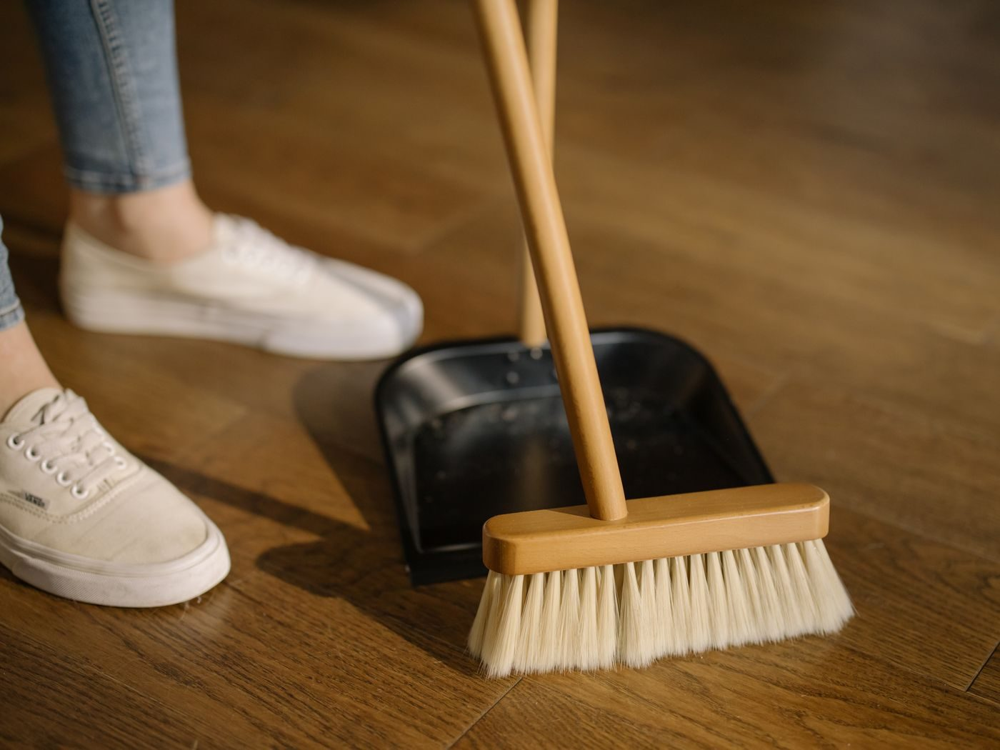

Happy Housekeepers
A family-run house cleaning service in Richmond, for homes and offices.

About
Happy Housekeepers is a family-run house cleaning service in the Richmond area, serving Richmond, Midlothian, and Chesterfield. The service covers sleeping and living areas, kitchens and eating areas, and bathrooms, with one-time and recurring maid service plus office cleanings.
Cleaning services
Family run, serving Richmond, Midlothian, and Chesterfield
Happy Housekeepers is a family-run service for homes in Richmond, Midlothian, and Chesterfield. Call (804) 938-3368 to ask about a cleaning.
Gallery


All gallery photos are stock photos, labeled as such. They show house cleaning, not this service's cleaners or clients.
Visit
Area: Richmond, VA
Hours: Monday to Friday 10:00 AM to 3:00 PM. Saturday 10:00 AM to 1:00 PM. Sunday closed.
A second HomeAdvisor page shows different hours. Call to confirm before planning around them.
Phone: (804) 938-3368
Contact
Happy Housekeepers serves Richmond, VA. Questions? Call (804) 938-3368.